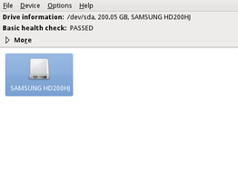
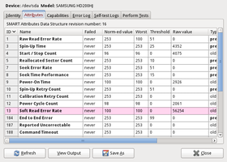

Festplattenstatus
Dieser Artikel wurde für die folgenden Ubuntu-Versionen getestet:
Ubuntu 16.04 Xenial Xerus
Ubuntu 14.04 Trusty Tahr
Zum Verständnis dieses Artikels sind folgende Seiten hilfreich:
 Magnetische Massenspeichergeräte (Festplatten) arbeiten in mechanisch-technischen Grenzbereichen. Die Frage, ob sie irgendwann versagen, stellt sich daher nicht – interessant ist nur, wann dies der Fall sein wird. Bei den meisten Beschädigungen ist zwar eine Wiederherstellung durch Spezialisten möglich, welche aber ausgesprochen kostenintensiv ist und daher selten eine wirkliche Option darstellt.
Magnetische Massenspeichergeräte (Festplatten) arbeiten in mechanisch-technischen Grenzbereichen. Die Frage, ob sie irgendwann versagen, stellt sich daher nicht – interessant ist nur, wann dies der Fall sein wird. Bei den meisten Beschädigungen ist zwar eine Wiederherstellung durch Spezialisten möglich, welche aber ausgesprochen kostenintensiv ist und daher selten eine wirkliche Option darstellt.
Da diese Erkenntnisse nicht neu sind, wurden Strategien entworfen, wie sich Festplatten selbst reparieren können. Zusätzlich sollen sie die Sicherheit gewähren, dass das, was wichtig ist, nämlich die Daten auf dem Gerät, erst gar nicht zu Schaden kommen können. Die Hersteller der Geräte (P-ATA-, S-ATA- und SCSI-Industriestandardgeräte) haben ein Diagnosesystem entwickelt, welches den aktuellen Festplattenstatus möglichst genau bestimmen kann. Anhand dessen soll dieses über einen gewissen Zeitraum Prognosen liefern, wann welche Beschädigung vermutlich eintritt. Diese Technik trägt den Namen S.M.A.R.T. (Self-Monitoring, Analysis and Reporting Technology) und dessen Verwendung mit den S.M.A.R.T. Monitoring Tools  (smartmontools) ist Inhalt dieses Artikels.
(smartmontools) ist Inhalt dieses Artikels.
Neben regelmäßigen Sicherheitskopien kann der Benutzer auch RAID-Modi (z.B. Software RAID-1 via LVM) verwenden, um seine Daten sicher zu halten.
Eine 100 prozentige Sicherheit, dass S.M.A.R.T. den Nutzer rechtzeitig alarmiert, gibt es nicht. Bei einer älteren Studie aus dem Jahr 2007 von Google, bei der 100.000 Festplatten, die in den Rechenzentren des Konzerns ihren Dienst versagten, analysiert wurden, zeigten lediglich 64% der Platten rechtzeitig Probleme an. Die komplette Studie kann als PDF-Dokument heruntergeladen werden . Ergänzend zu S.M.A.R.T. kann z.B. noch regelmäßig eine Überprüfung der Festplatte mittels badblocks erfolgen.
Grundlagen¶
S.M.A.R.T. unterscheidet drei Datensammel-Kategorien:
Online Tests nehmen keinen direkten Einfluss auf die eigentliche Tätigkeit des Gerätes, weswegen sie jederzeit durchgeführt werden können (die Namensgebung ist in der Hinsicht etwas ungeschickt).
Offline Tests können Auswirkungen auf den regulären Betrieb haben. Daher führt die Festplatte, falls nicht explizit anders eingestellt, diese Tests selbstständig in der sogenannten Idle-Zeit aus, das heißt salopp formuliert, wenn die Festplatte sowieso nichts Besseres zu tun hat.
Self Tests laufen nicht automatisch, sondern müssen explizit angestoßen werden. Diese Tests können sich von Minuten bis zu Stunden hinziehen und liefern viele Daten.
Installation¶
Grundlage jeglicher Tests sind die Programme smartctl und der Daemon smartd, die im folgenden Paket enthalten sind:
smartmontools
 mit apturl
mit apturl
Paketliste zum Kopieren:
sudo apt-get install smartmontools
sudo aptitude install smartmontools
Neben der Kommandozeile stehen mit der Laufwerksverwaltung oder GSmartControl grafische Diagnosewerkzeuge zur Verfügung.
Verwendung¶
Aktivierung¶
S.M.A.R.T., zu deutsch in etwa Selbstüberwachungs-, Analyse- und Benachrichtigungstechnik, läuft völlig autonom innerhalb des Geräts ab und ist in der Lage, Werte und Einstellungen zu speichern. Durch unsinnig restriktive BIOS-Einstellungen ist diese Funktion bei älteren Rechnern manchmal abgeschaltet. Erhält man während des Bootvorgangs eine Meldung wie
IDE Primary Master S.M.A.R.T. capable but disabled
so wird S.M.A.R.T. erkannt, ist aber manuell abgeschaltet. Wie die notwendigen Einstellungen im BIOS vorgenommen werden, um S.M.A.R.T. wieder zu aktivieren, geht über diesen Artikel hinaus. Das BIOS-Kompendium  ist hierfür aber eine gute Anlaufstelle. Im Zweifelsfall sollte man auch die Dokumentation des Mainboards zu Rate ziehen.
ist hierfür aber eine gute Anlaufstelle. Im Zweifelsfall sollte man auch die Dokumentation des Mainboards zu Rate ziehen.
SSDs und neue Festplattenmodelle¶
SSDs werden erst ab Version 5.40, also ab Ubuntu 11.10, offiziell unterstützt. Wegen der rasanten Entwicklung bei SSDs und aufgrund neuer Festplattenmodelle haben die smartmontools-Versionen eine Update-Funktion für die intern genutzte Datenbank bekommen. Damit erhält man jeweils eine aktuelle drivedb.h, die bei der Identifizierung der Speichermedien hilft. Um die Datenbank zu aktualisieren, dient folgender Befehl:
sudo update-smart-drivedb
Jetzt werden auch aktuelle SSDs, die erst kurz auf dem Markt sind, richtig erkannt und alle SSD-spezifischen Attribute korrekt angezeigt. Dies gilt ebenso für neue Festplattenmodelle, die möglicherweise noch nicht in der Datenbank enthalten sind. Die Ausgabe von
sudo smartctl -a /dev/sda
zeigt an, ob die Festplatte in der Datenbank enthalten ist:
Device is: In smartctl database ...
Falls die Festplatte nicht enthalten ist, sollte wie oben beschrieben die Datenbank manuell aktualisiert werden.
Hinweis: Aufgrund von Änderungen in der Infrastruktur von Sourceforge stimmt seit mindestens Anfang August 2013 der ursprüngliche Download-Link in update-smart-drivedb nicht mehr. Durch Änderung der URL in /usr/sbin/update-smart-drivedb kann das Problem behoben werden:
# ViewVC repository browser ## MANUALLY UPDATED: commented orginial URL and inserted URL from script of smartmontools v6.2 package. ## SRCEXPR='http://smartmontools.svn.sourceforge.net/viewvc/smartmontools/$location/smartmontools/drivedb.h?revision=HEAD' SRCEXPR='http://sourceforge.net/p/smartmontools/code/HEAD/tree/$location/smartmontools/drivedb.h?format=raw'
Alternativ nimmt dieser Befehl in einem Terminal eingegeben die obige Änderung vor:
sed -i "/^SRCEXPR/{s#=.*#='https://sourceforge.net/p/smartmontools/code/HEAD/tree/\$location/smartmontools/drivedb.h?format=raw'#}" $(which update-smart-drivedb)Ab Ubuntu 16.04 ist der Aufruf von update-smart-drivedb nicht mehr möglich, da das entsprechende Programm aus dem Paket smartmontools aufgrund von Sicherheitsbedenken - die Aktualisierung erfolgt nicht über die zentrale Paketverwaltung - herausgenommen wurde. Eine Aktualisierung der Datenbank drivedb.h kann jedoch manuell vorgenommen werden. Dazu muss die Datenbank von smartmontools heruntergeladen werden und im Verzeichnis /var/lib/smartmontools/drivedb/ abgelegt werden. Ggf. sollten noch die Rechte der Datenbank aktualisiert werden. Zusammenfassend kann die Aktualisierung wie folgt durchgeführt werden [1]:
wget https://www.smartmontools.org/export/4325/branches/RELEASE_6_4_DRIVEDB/smartmontools/drivedb.h sudo mv /var/lib/smartmontools/drivedb/drivedb.h /var/lib/smartmontools/drivedb/drivedb.h.bak sudo mv drivedb.h /var/lib/smartmontools/drivedb/ sudo chown -c root:root /var/lib/smartmontools/drivedb/drivedb.h
smartctl¶
smartctl ist ein Kommandozeilenprogramm, welches S.M.A.R.T.-Statusmeldungen von modernen ATA- und SCSI-Festplatten auslesen kann. Diese Selbstüberwachung erlaubt das Erkennen eventuell drohender Hardwaredefekte. Dieses Programm wird auch benötigt, um die Load-Cycle-Counts einer Notebook-Festplatte festzustellen. Hierzu hilft der Artikel Notebook-Festplatten-Bug weiter.
Um das Programm nutzen zu können, muss man den entsprechenden Gerätenamen wissen. Außerdem sind Root-Rechte erforderlich. Ein Befehl [1] ist immer nach dem folgenden Muster aufgebaut:
sudo smartctl -PARAMETER GERÄTENAME
Für den jeweiligen GERÄTENAMEN siehe den separaten Artikel Datenträger. Verschiedene Parameter können kombiniert werden.
| smartctl | |
| Parameter | Beschreibung |
-i | Gibt an, ob S.M.A.R.T. verfügbar ist |
-h | Befehlsreferenz ausgeben |
-s on | S.M.A.R.T. wird aktiviert |
-a | zusammenfassende Ausgabe aller Festplatteninformationen und Testergebnisse (bei ATA gleichbedeutend mit -H -i -c -A -l error -l selftest -l selective, bei SCSI mit -H -i -A -l error -l selftest) |
-A | Werte aller Attribute |
-H | Abfrage des Gesundheitszustands |
-c | Überprüfung, welche Tests (TEST) möglich sind / Zeit, die diese benötigen / Anzeige des momentanen Testfortschrittes (Self-test execution status) |
-S on | Automatisches Speichern der Einstellungen |
-t TEST | Durchführung des möglichen Tests (short, offline, long ...) |
-o on | Startet die Offline Tests mit einem 4-Stunden-Zyklus |
-t long | Startet einen langen selftest. Der Test ist auch unter dem Synonym Oberflächenanalyse bekannt. |
-t short | Startet einen kurzen selftest. Der Test ist zwar kurz, dauert aber mindestens eine Minute (auch wenn die Konsole sofort wieder freigegeben wird). Die Endzeit ist angegeben. |
-t offline | Startet sofort die Offline Tests (Anzeige der Ergebnisse nur mit -l error oder -a) |
-l selftest | Zeigt das Log des letzten Selbsttests |
-X | Test abbrechen |
-l error | Fehlermeldungen ausgeben |
Weitere Parameter sind den Manpages zu entnehmen.
Schnelltest¶
sudo smartctl -H /dev/sda #Status der ersten SATA Platte
smartctl 5.41 2011-06-09 r3365 [x86_64-linux-3.2.0-37-generic] (local build) Copyright (C) 2002-11 by Bruce Allen, http://smartmontools.sourceforge.net === START OF READ SMART DATA SECTION === SMART overall-health self-assessment test result: PASSED
Das Ergebnis PASSED bedeutet, dass keine Fehler gefunden wurden. Hier gilt jedoch zu beachten, dass lediglich interne Daten ausgelesen und keine Überprüfung durchgeführt wird. Erscheint FAILED, droht ein Defekt und ein damit verbundener Datenverlust.
Ausführlicher Test¶
Für aussagekräftigere Ergebnisse ist ein ausführlicher Test des Laufwerks üblich.
sudo smartctl -t long /dev/sda #Status der ersten SATA Platte ermitteln
Die Zeit der Beendigung des Tests wird danach angezeigt und hängt unter anderem von der Festplattengröße, -geschwindigkeit und möglicherweise den gefundenen Fehlern ab (üblicherweise etwa zwischen 20 und 60 Minuten). Nach Ablauf dieser Zeit kann man die Ergebnisse anzeigen lassen:
sudo smartctl -a /dev/sda #Status der ersten SATA Platte anzeigen
Das Ergebnis des Tests befindet sich direkt unter der Tabelle. Die Tabelle wird im nächsten Abschnitt Abfrage der Attribute interpretiert. Zur Interpretation der Ausgaben kann man sich auch an das Forum Sicherheit wenden.
Abfrage der Attribute¶
sudo smartctl -A /dev/sda #erste SATA-Platte
smartctl 5.41 2011-06-09 r3365 [x86_64-linux-3.2.0-37-generic] (local build) Copyright (C) 2002-11 by Bruce Allen, http://smartmontools.sourceforge.net === START OF READ SMART DATA SECTION === SMART Attributes Data Structure revision number: 16 Vendor Specific SMART Attributes with Thresholds: ID# ATTRIBUTE_NAME FLAG VALUE WORST THRESH TYPE UPDATED WHEN_FAILED RAW_VALUE 1 Raw_Read_Error_Rate 0x000f 198 192 051 Pre-fail Always - 20052 3 Spin_Up_Time 0x0003 173 172 021 Pre-fail Always - 6316 4 Start_Stop_Count 0x0032 098 098 000 Old_age Always - 2178 5 Reallocated_Sector_Ct 0x0033 200 200 140 Pre-fail Always - 0 7 Seek_Error_Rate 0x000e 200 200 051 Old_age Always - 0 9 Power_On_Hours 0x0032 071 071 000 Old_age Always - 21744 10 Spin_Retry_Count 0x0012 100 100 051 Old_age Always - 0 11 Calibration_Retry_Count 0x0012 100 100 051 Old_age Always - 0 12 Power_Cycle_Count 0x0032 099 099 000 Old_age Always - 1290 192 Power-Off_Retract_Count 0x0032 200 200 000 Old_age Always - 493 193 Load_Cycle_Count 0x0032 200 200 000 Old_age Always - 2178 194 Temperature_Celsius 0x0022 112 094 000 Old_age Always - 38 196 Reallocated_Event_Count 0x0032 200 200 000 Old_age Always - 0 197 Current_Pending_Sector 0x0012 200 200 000 Old_age Always - 0 198 Offline_Uncorrectable 0x0010 200 200 000 Old_age Offline - 0 199 UDMA_CRC_Error_Count 0x003e 200 200 000 Old_age Always - 46917 200 Multi_Zone_Error_Rate 0x0008 200 200 051 Old_age Offline - 0
Die Ausgabe bedeutet:
| Werte | |
| Ausgabe | Beschreibung |
Value | aktueller Parameterwert => allgemeine Tendenz: sinkend |
Worst | bisher schlechtester Wert |
Thresh | Grenzwert |
Type | Bei Grenzunterschreitung droht ein baldiger Ausfall (Pre-fail) / der Parameter informiert über Temperatur / Alterungsprozesse der Festplatte (Old age) |
Updated | Art der Aktualisierung: permanent (always) / Selbsttest (Offline data collection) |
WHEN_FAILED | Gefahrenzustand: Sofortiger Ausfall droht durch zeitweiligen Gleichstand oder Unterschreiten von Value mit Thresh !!! (FAILING_NOW) / keine akute Gefahr bei zeitweiligem Gleichstand oder Unterschreiten von Worst mit Thresh (In_the_past) |
Zu Beachten ist also, dass das Unterschreiten der Grenzwerte ein Gefahrenzeichen darstellt, nicht das Überschreiten. Im Beispiel ist alles in Ordnung, da die Parameterwerte alle über den jeweiligen Grenzwerten liegen. Kritisch sind Fehler bei den mit Pre-fail bezeichneten Attributen, da hier tatsächlich ein Versagen innerhalb kürzester Zeit droht! In diesem Fall empfiehlt sich der sofortige Austausch des Laufwerks. Interpretationshilfe zur Tabelle: Solange unter der Spalte WHEN_FAILED keine Fehler vermerkt sind, ist das Laufwerk noch in Ordnung.
Siehe auch:
GSmartControl¶
GSmartControl bietet eine sehr einfach zu bedienende grafische Oberfläche für die smartmontools. Das Programm ist in den Paketquellen enthalten. Das zu installierende Paket heißt:
gsmartcontrol (universe)
mit apturl
Paketliste zum Kopieren:
sudo apt-get install gsmartcontrol
sudo aptitude install gsmartcontrol
Sowohl der Quellcode als auch unter Umständen aktuellere DEB-Pakete als aus den offiziellen Paketquellen lassen sich auf der Projektseite herunterladen  .
.
|  |
| Übersicht |
|  |
| Report |
Die Bedienung des englischsprachigen Programms ist selbsterklärend. Nach Auswahl der gewünschten Speichermediums wird ein Report erzeugt, der für weitere Diagnosezwecke gespeichert werden kann. Tooltips geben weitere Hinweise zu den jeweiligen Attributen. Im konkreten Beispiel (siehe Abbildung) tritt ein ungewöhnlich hoher Wert bei der "Soft Read Error Rate" auf, der daher rot gekennzeichnet ist. Obwohl keine S.M.A.R.T.-Warnung erfolgt, ist dieser Wert ein Indiz für ein Plattenproblem. Daher wurden die Daten der betroffenen Festplatte gesichert und die Platte selbst ausgemustert.
smartd¶
smartd ist ein Dienst (Daemon), dessen Aufgabe es ist, die S.M.A.R.T.-Einstellungen und -Daten regelmäßig abzufragen und Änderungen in der Datei /var/log/messages zu speichern bzw. diese per E-Mail zu melden. Um den Dienst über das mitgelieferte Skript /etc/init.d/smartmontools zu starten [4], muss die Datei /etc/default/smartmontools editiert werden [3]. Hier muss die Option start_smartd=yes aktiviert werden. Die Konfiguration von smartd erfolgt über die Datei /etc/smartd.conf, in der auch einige Beispieleinstellungen angegeben sind. Ob diese Einstellungen brauchbar sind, erfährt man durch folgenden Test:
sudo smartd cat /var/log/syslog
Zuerst wird der Dienst gestartet (welcher dazu die Konfigurationsdatei /etc/smartd.conf liest) und dann dessen Ausgabe im Syslog angezeigt. Die sollte in etwa so aussehen:
Jul 24 20:51:31 COMPUTERNAME smartd[8216]: smartd version 5.37 [i686-pc-linux-gnu] Copyright (C) 2002-6 Bruce Allen Jul 24 20:51:31 COMPUTERNAME smartd[8216]: Home page is http://smartmontools.sourceforge.net/ Jul 24 20:51:31 COMPUTERNAME smartd[8216]: Opened configuration file /etc/smartd.conf Jul 24 20:51:31 COMPUTERNAME smartd[8216]: Configuration file /etc/smartd.conf parsed. Jul 24 20:51:31 COMPUTERNAME smartd[8216]: Device: /dev/sda, opened Jul 24 20:51:31 COMPUTERNAME smartd[8216]: Device: /dev/sda, found in smartd database. Jul 24 20:51:31 COMPUTERNAME smartd[8216]: Device: /dev/sda, enabled SMART Attribute Autosave. Jul 24 20:51:31 COMPUTERNAME smartd[8216]: Device: /dev/sda, enabled SMART Automatic Offline Testing. Jul 24 20:51:31 COMPUTERNAME smartd[8216]: Device: /dev/sda, is SMART capable. Adding to "monitor" list. Jul 24 20:51:31 COMPUTERNAME smartd[8216]: Monitoring 1 ATA and 0 SCSI devices Jul 24 20:51:31 COMPUTERNAME smartd[8218]: smartd has fork()ed into background mode. New PID=8218.
In der Konfigurationsdatei /etc/smartd.conf steht z.B. Folgendes:
# -a alle SMART-Werte beobachten # -o on aktiviert regelmäßiges OFFLINE-Testen # -S on aktiviert autosave # To schedule an Offline Immediate test after every midnight, 6am, noon,and 6pm, # plus a Short Self-Test daily at 1-2am and a Long Self-Test every Saturday at 3-4am, use: # -d sat für SATA-Platte (smartd beschwert sich sonst) # -H Health-Status ausgeben /dev/sda -a -o on -S on -s (O/../.././(00|06|12|18)|S/../.././01|L/../../6/03) -d sat -H
Damit eine solche Konfiguration von smartd auch wirklich benutzt wird, darf sie auf keinen Fall unterhalb einer Zeile stehen, die mit DEVICESCAN beginnt. Nach der Installation des smartd-Paketes kann das aber der Fall sein, daher sollte man das überprüfen und gegebenenfalls diese Zeile auskommentierten (also ein "#" davor stellen):
#DEVICESCAN -m root -M exec /usr/share/smartmontools/smartd-runner
Experten-Info:
Weitere Infos in den Manpages von smartd und smartd.conf.
smart-notifier¶
Zusätzlich kann das Paket
smart-notifier (universe)
mit apturl
Paketliste zum Kopieren:
sudo apt-get install smart-notifier
sudo aptitude install smart-notifier
installiert werden. Dieses sorgt dafür, dass der Desktop-Nutzer bei von smartd erkannten Problemen per Benachrichtigungsdienst gewarnt wird.
Konfiguration¶
Falls es nicht schon durch die Installation von smart-notifier geschehen, muss man dafür sorgen, dass das Programm nach dem Start des Rechners auch wirklich läuft. Dazu die Autostart-Einstellungen der jeweiligen Desktop-Oberfläche öffnen und dort kontrollieren, ob ein Eintrag vorhanden ist, der smart-notifier startet. Falls der fehlt, muss ein Programmstarter angelegt werden.
Außerdem muss man nach der Installation die Konfigurationsdatei von smartd ergänzen:
die oben schon erwähnte /etc/smartd.conf öffnen (erfordert root-Rechte) und in die Zeile gehen, in der man die Konfiguration vorgenommen hat (siehe oben stehendes Beispiel)
in genau dieser Zeile wird folgendes angehängt:
-m BENUTZERNAME@RECHNERNAME -M exec /usr/share/smartmontools/smartd-runner
die Teile
BENUTZERNAMEundRECHNERNAMEmüssen an die entsprechenden Werte des eigenen Rechners angepasst werdenfür das weiter oben stehende Beispiel sähe die Zeile dann insgesamt so aus:
/dev/sda -a -o on -S on -s (O/../.././(00|06|12|18)|S/../.././01|L/../../6/03) -d sat -H -m BENUTZERNAME@RECHNERNAME -M exec /usr/share/smartmontools/smartd-runner
Änderungen speichern und smartd neu starten:
sudo /etc/init.d/smartmontools restart
Testen des Benachrichtigungsdienstes¶
Um zu testen, ob smart-notifier auch tatsächlich funktioniert, geht man wie folgt vor:
Sicherstellen, dass smart-notifier läuft
/etc/smartd.conf öffnen (erfordert Root-Rechte) und wieder in die Zeile mit der gerade vorgenommen Konfiguration gehen
in der Zeile den Wert
-M testhinzufügenfür das weiter oben stehende Beispiel sähe die Zeile dann insgesamt so aus:
/dev/sda -a -o on -S on -s (O/../.././(00|06|12|18)|S/../.././01|L/../../6/03) -d sat -H -m BENUTZERNAME@RECHNERNAME -M test -M exec /usr/share/smartmontools/smartd-runner
Änderungen speichern und smartd neu starten:
sudo /etc/init.d/smartmontools restart
jetzt sollte ein Fenster erscheinen, in dem steht, dass der Test des smartd erfolgreich war
nach dem Test muss der gerade eingefügte Teil
-M testwieder aus /etc/smartd.conf gelöscht werden
hddtemp¶
hddtemp ist ein kleines Programm, das die Temperatur einer Festplatte über die in der Platte eingebauten S.M.A.R.T.-Sensoren auslesen kann. hddtemp kann die gewonnenen Daten entweder im Syslog ausgeben oder als Serverdienst im Hintergrund abfragen. Weitere Informationen hierzu gibt es in hddtemp.
Ernstfall testen¶
Den Benachrichtigungsdienstes zu testen, ist zwar eine gute Möglichkeit einige Konfigurationsfehler zu entdecken, stellt jedoch keinen praxisnahen Ernstfall dar. Es bleibt die Ungewissheit, ob kritische Smartwerte überhaupt erkannt und davor gewarnt werden. Ein guter, aber eher „schmutzige“ Trick, um eine Störung zu simulieren, ist das Erstellen eines defekten Sektors mittels hdparm. Es korrumpiert dabei die ECC Daten des Sektors, jedoch nicht die Oberfläche des Mediums. Der Sektor ist also physikalisch vollkommen in Ordnung, es wird nur vorgegeben, dass ein Defekt vorliegt.
Vorbereitung¶
SMART-Dienst anpassen¶
Als Beispiel wird folgende Einstellung in /etc/smartd.conf verwendet:
DEVICESCAN -a -I 194 -W 3,45,54 -R 5 -r 5 -n standby,10 -m BENUTZERNAME -M exec /usr/share/smartmontools/smartd-runner -s (O/../.././(06|12|18|24)|S/../../6/03|L/../(01|15)/./03)
Für BENUTZERNAME muss der entsprechende Benutzer eingetragen werden. Die Werte (06|12|18|24) müssen ebenfalls angepasst werden, schließlich will man nicht unnötig lange auf den Offline-Test warten. Es empfiehlt sich daher die kommenden vollen Stunden einzutragen, z.B. (15|16|17). Wie man vielleicht an der Konfiguration erkennt, soll im Fehlerfall eine E-Mail an BENUTZERNAME verschickt und smartd-runner gestartet. Dieser beauftragt u.a. smart-notifier eine Fehlermeldung auf dem Desktop auszugeben.
Zum Einlesen der Konfiguration wird der Dienst neu gestartet:
sudo service smartd restart
smart-notifier starten¶
In diesem Beispiel wird smart-notifier verwendet und muss daher auch gestartet werden:
smart-notifier
Test¶
Achtung!
Der folgende Gebrauch von hdparm korrumpiert Daten auf der Festplatte und kann unter Umständen das Dateisystem zerstören! Es sollte nicht auf produktiv eingesetzte Festplatten angewandt werden.
Der erste Schritt besteht darin eine ausrangierte, oder zumindest ungenutzte Festplatte an das System anzuschließen und einen defekten Sektor zu erzeugen. Zunächst liest man die SMART-Werte aus, um den aktuellen Stand der Festplatte zu erfahren.
sudo smartctl -A /dev/sdX
... 196 Reallocated_Event_Count 0x0032 200 200 000 Old_age Always - 0 197 Current_Pending_Sector 0x0032 200 200 000 Old_age Always - 0 198 Offline_Uncorrectable 0x0030 200 200 000 Old_age Offline - 0 ...
Current_Pending_Sector ist bei 0. Es liegen also keine defekten Sektoren vor. Nun erzeugt man einen defekten Sektor. /dev/sdX muss entsprechend angepasst werden.
sudo hdparm --yes-i-know-what-i-am-doing --make-bad-sector 100 /dev/sdX
Im Anschluss wird der Sektor gelesen, damit der Fehler erkannt und an SMART übertragen wird.
sudo hdparm --read-sector 100 /dev/sdX
Die SMART-Werte haben sich nun geändert.
sudo smartctl -A /dev/sdX
... 196 Reallocated_Event_Count 0x0032 200 200 000 Old_age Always - 0 197 Current_Pending_Sector 0x0032 200 200 000 Old_age Always - 1 198 Offline_Uncorrectable 0x0030 200 200 000 Old_age Offline - 0 ...
Current_Pending_Sector hat den Wert 1. Es wird ein defekter/korrumpierter Sektor gemeldet.
Der Dienst smartd wird nach einiger Zeit, abhängig von Uhrzeit und Einstellung, einen Offline-Test starten und einen Fehler melden. Dieser erscheint zum einen in /var/log/syslog und in unserem Beispiel auch als E-Mail in /var/mail/BENUTZERNAME
grep smartd /var/log/syslog
... Jul 1 14:42:00 pc1 smartd[20780]: Device: /dev/sdd [SAT], 1 Currently unreadable (pending) sectors Jul 1 14:42:00 pc1 smartd[20780]: Sending warning via /usr/share/smartmontools/smartd-runner to <USER> ... Jul 1 14:42:00 pc1 smartd[20780]: Warning via /usr/share/smartmontools/smartd-runner to <USER>: successful ...
Beispiel einer E-Mail aus /var/mail/BENUTZERNAME:
From root@pc1 Sun Jul 01 14:42:00 2012
Return-path: <root@pc1>
Envelope-to: <USER>@pc1
Delivery-date: Sun, 01 Jul 2012 14:42:00 +0200
Received: from root by pc1 with local (Exim 4.80)
(envelope-from <root@pc1>)
id 1SlJTU-0002x0-Dn
for <USER>@pc1; Sun, 01 Jul 2012 14:42:00 +0200
Subject: SMART error (CurrentPendingSector) detected on host: pc1
To: <<USER>@pc1>
X-Mailer: mail (GNU Mailutils 2.99.97)
Message-Id: <E1SlJTU-0002x0-Dn@pc1>
From: root@pc1
Date: Sun, 01 Jul 2012 14:42:00 +0200
This email was generated by the smartd daemon running on:
host name: pc1
DNS domain: [Unknown]
NIS domain: (none)
The following warning/error was logged by the smartd daemon:
Device: /dev/sdd [SAT], 1 Currently unreadable (pending) sectors
For details see host's SYSLOG.
You can also use the smartctl utility for further investigation.
Another email message will be sent in 24 hours if the problem persists.Zuletzt sollte smart-notifier eine Fehlermeldung auf dem Desktop anzeigen.
Aufräumen¶
Funktioniert alles wie erhofft, repariert man den als defekt gekennzeichnete Sektor.
sudo hdparm --yes-i-know-what-i-am-doing --repair-sector 100 /dev/sdX
Erneut wird der Sektor eingelesen und die Werte an SMART übertragen.
sudo hdparm --read-sector 100 /dev/sdX
Die Smart-Werte haben sich nun wieder geändert. Diesmal zum Besseren.
sudo smartctl -A /dev/sdX
... 196 Reallocated_Event_Count 0x0032 200 200 000 Old_age Always - 0 197 Current_Pending_Sector 0x0032 200 200 000 Old_age Always - 0 198 Offline_Uncorrectable 0x0030 200 200 000 Old_age Offline - 0 ...
Die Zeiten an denen der Offline-Test durchgeführt werden soll, müssen unter /etc/smartd.conf ebenfalls rückgängig gemacht werden. In unserem Beispiel also wieder (06|12|18|24).
Problembehebung¶
Externe USB-Gehäuse¶
Externe USB-Gehäuse besitzen in der Regel einen Wandler-Chip (z.B. eine USB-SATA-Bridge), der als Konverter zwischen den verschiedenen Schnittstellen/Protokollen fungiert. Dabei kann es passieren, dass eine S.M.A.R.T.-Abfrage nicht korrekt umgesetzt wird:
sudo smartctl -A /dev/sdX
/dev/sdX: Unknown USB bridge [0x1e68:0x001b (0x000)]
und somit Festplatten in externen Gehäusen als nicht unterstützt erscheinen, obwohl sie von Haus aus durchaus S.M.A.R.T.-fähig sind. Abhilfe schafft die Verwendung einer speziellen Option:
sudo smartctl -A -d sat /dev/sdX
Siehe auch USB devices and smartmontools .
Links¶
Intern¶
Notfall
 Was tun in Notfällen?
Was tun in Notfällen? Laufwerksverwaltung – Grafisches Standardprogramm von GNOME zum Verwalten von Laufwerken und Partitionen
Datensicherung – Wie der Name sagt: Alles zum Thema Datensicheung
Festplatten Problembehebung – Bei Fehlern im Dateisystem oder auf den Partitionen
Datenrettung – Gelöschte Dateien wiederherstellen sowie Daten von beschädigten Partitionen retten
Dateisysteme und Datenträger
Übersicht über weitere Artikel zum Thema
Extern¶
Smartmontools for SCSI devices
- HintergrundinformationenSmartmontools
- Linux User, 10/2004
- Erstellt mit Inyoka
-
 2004 – 2017 ubuntuusers.de • Einige Rechte vorbehalten
2004 – 2017 ubuntuusers.de • Einige Rechte vorbehalten
Lizenz • Kontakt • Datenschutz • Impressum • Serverstatus -
Serverhousing gespendet von